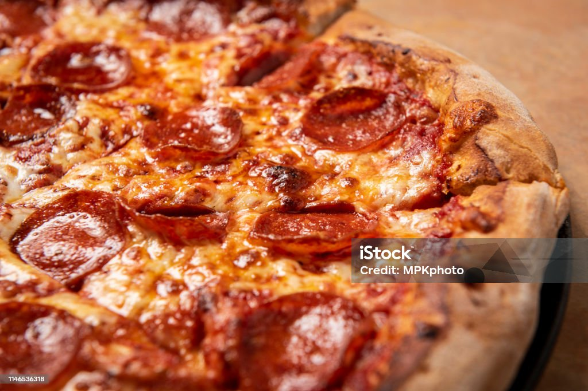
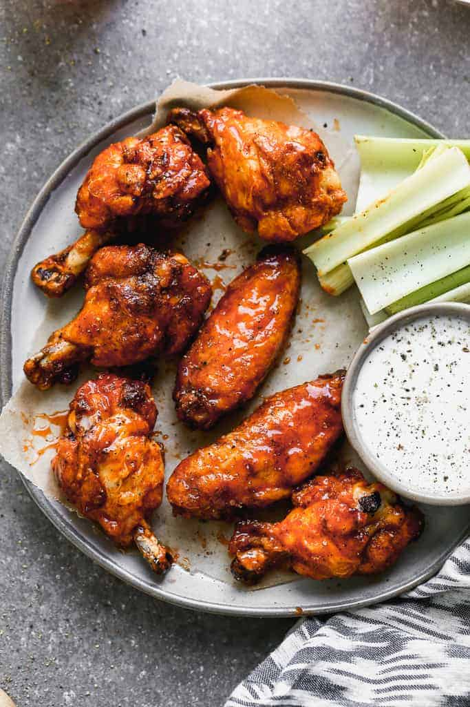

Back to Home
My Cookbook
Welcome to my recipe collection!
Homemade Pizza
Recipe by:
Marianne Edwards, Lake Stevens, Washington

Ingredients
- 1 package (1/4 ounce) active dry yeast
- 1 teaspoon sugar
- 1-1/4 cups warm water (110° to 115°)
- 1/4 cup canola oil
- 1 teaspoon salt
- 3-1/2 to 4 cups all-purpose flour
- 1 can (15 ounces) tomato sauce
- 3 teaspoons dried oregano
- 1 teaspoon dried basil
- Pepperoni
-
2 cups toppings of your choice (like sliced pepperoni,
cooked crumbled sausage, chopped onion, sliced mushrooms,
chopped green pepper or sliced olives), optional
-
2 cups shredded part-skim mozzarella cheese
Directions
-
In large bowl, dissolve yeast and sugar in water; let stand for
5 minutes. Add oil and salt. Stir in flour, 1 cup at a time,
until a soft dough forms.
-
Turn onto a floured surface; knead until smooth and elastic,
2-3 minutes. Place in a greased bowl, turning once
to grease the top. Cover and let rise in a warm place until
doubled, about 45 minutes.
-
Punch down dough; divide in half. Press each half into a greased
12-in. pizza pan. Combine the tomato sauce, oregano and basil;
spread over each crust. If desired, add toppings of your choice.
Sprinkle with cheese.
-
Bake at 400° for 25-30 minutes or until crust is lightly
browned.
Nutrition Facts
2 pieces: 485 calories, 18g fat (5g saturated fat), 24mg
cholesterol, 972mg sodium, 63g carbohydrate (3g sugars, 4g fiber),
18g protein.
Classic Hamburger Recipe
Recipe by:
Lauren Allen

An easy Hamburger recipe that is juicy, tender, and restaurant-
worthy! It's made with ground chuck and has the best burger
seasoning, piled high with your favorite toppings. Check out all my
tips for the perfect burgers!
Ingredients
- 1 ½ pounds ground chuck*, , (80/20)
- 1 1/2 teaspoons freshly ground black pepper
- 1 teaspoon salt
- 2 teaspoon paprika
- 1/2 teaspoon light brown sugar
- 1/4 teaspoon garlic powder
- 1/4 teaspoon onion powder
- 1/4 teaspoon cayenne pepper
Toppings:
- 6 hamburger buns, , toasted, if desired
- 6 slices American cheese*, , or your favorite cheese
- 6 lettuce leaves
- 1 beefsteak tomato, , thinly sliced
- ½ of a red or white onion, , thinly sliced
- 6 Pickle slices
-
Other topping ideas: sautéed mushrooms, grilled onions,
jalapeños, bacon, onion rings
-
Condiments: ketchup, mustard, BBQ sauce, Thousand island
dressing, Ranch dressing, or homemade Chick-fil A Sauce.
Directions
-
Make burger seasoning by combining all spices in a bowl. Set
aside.
-
Form Patties: Divide ground chuck into 6 equal portions and
gently form into ½ inch thick patties that are wider than the
burger buns, since the meat will shrink as it cooks. (Don't
over-handle the meat, or it will make it tough).
-
Indent: Use your thumb to press a gentle indentation into the
center of each patty, which will help them cook evenly and not
puff up in the center. Cover and set aside while preheating
grill. (Ice cube trick: Some chefs will put an ice cube on top
of each indentation on the patties until they’re ready to cook,
so they don't dry out.)
-
Grill: Preheat grill to medium high heat. Just before cooking,
sprinkle burger seasoning over the patties, then place on hot
grill, indent-side up. Close grill lid and cook for 3-4 minutes,
until the bottom of the burger is seared and juices are
accumulating on top of the burger. Flip and cook an additional
3-4 minutes, or until the beef reaches 160 degrees F.
-
Add cheese on top of burger patties during the last minute of
cooking. Remove to a plate and allow to rest for a few minutes
before serving on a bun, with desired toppings.
Nutrition Facts
Calories: 497kcal, Carbohydrates: 26g, Protein: 29g, Fat: 30g,
Saturated
Fat: 12g, Polyunsaturated Fat: 2g, Monounsaturated Fat: 12g,
Trans Fat:
1g, Cholesterol: 98mg, Sodium: 854mg, Potassium: 587mg,
Fiber: 2g, Sugar: 5g, Vitamin A: 2798IU, Vitamin C: 13mg,
Calcium: 225mg, Iron: 4mg
Crispy Baked Chicken Wings
Recipe by:
Lauren Allen

Equipment
- Half sheet pan and wire cooling rack
Ingredients
-
4 pounds chicken wings, , halved at joints, wingtips discarded
- 2 Tablespoons baking powder*, , aluminum free
- 3/4 teaspoon salt
- 1/2 teaspoon cracker black pepper
- 1 teaspoon paprika
- 1 teaspoon garlic powder
Buffalo Sauce:
- 1/3 cup Frank's Wings Hot Sauce
- 1 cup light brown sugar
- 1 Tablespoon water
Other Sauce ideas: honey BBQ sauce, ranch, honey garlic
sauce, BBQ sauce
Directions
-
Adjust your oven rack to the upper-middle position. Preheat
oven to 425 degrees F.
-
Line a baking sheet with aluminum foil and place a wire rack
(I use a cooling rack) on top. Spray the rack with non-stick
spray.
-
Use paper towels to pat the wings dry and place them in a large
bowl. It's important to dry them REALLY well!
-
Combine the salt, pepper, garlic powder, paprika, and baking
powder in a small bowl. Then sprinkle the seasoning over the
wings, tossing to evenly coat.
-
Arrange wings, skin side up, in single layer on prepared wire
rack.
-
Bake on the upper middle oven rack, turning every 20 minutes
until wings are crispy and browned. The total cook time will
depend on the size of the wings but may take up to 1 hour.
-
Remove from oven and let stand for 5 minutes. Transfer wings to
bowl and toss with sauce.
For Buffalo Sauce:
-
In a medium saucepan over medium heat stir together all sauce
ingredients. Mix well until sugar has dissolved.
-
Remove from heat and allow to cool to room temperature before
adding to wings (or prepare the sauce ahead of time and
refrigerate).
Nutrition Facts
Calories: 381kcal, Carbohydrates: 28g, Protein: 23g, Fat: 20g,
Saturated
Fat: 5g, Polyunsaturated Fat: 4g, Monounsaturated Fat: 8g, Trans
Fat:
0.2g, Cholesterol: 94mg, Sodium: 898mg, Potassium: 253mg,
Fiber: 0.2g, Sugar: 27g, Vitamin A: 319IU, Vitamin C: 8mg, Calcium:
216mg, Iron: 2mg
Back to Home